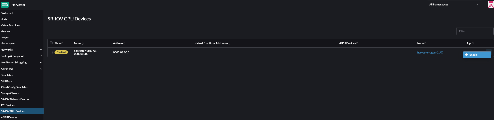
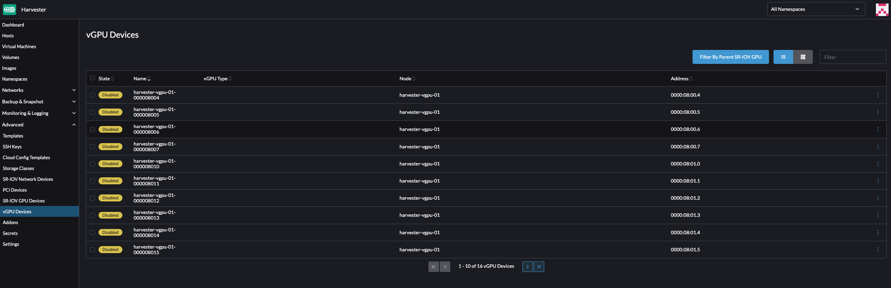
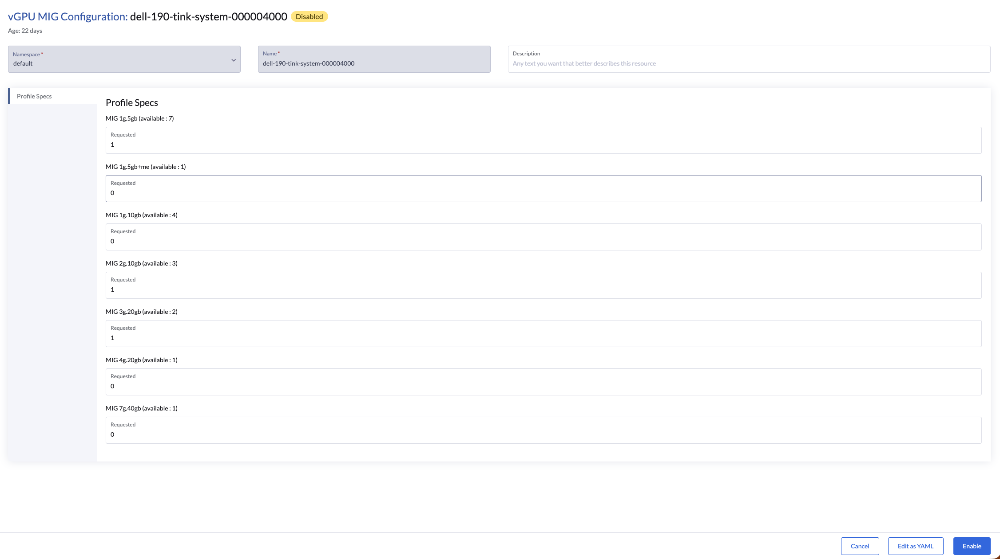
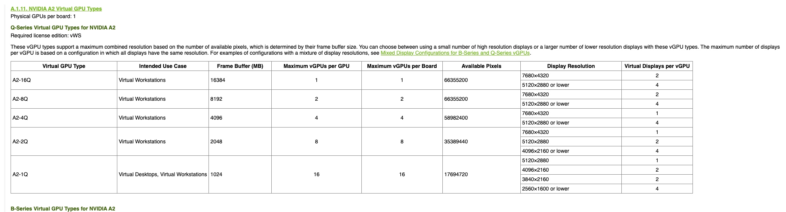

Suporte a vGPU
SUSE Virtualization é capaz de compartilhar o suporte da GPU NVIDIA para Virtualização de Entrada/Saída de Raiz Única (SR-IOV). Essa capacidade adicional, que é fornecida pelo complemento pcidevices-controller, aproveita sriov-manage para gerenciamento de GPU.
Para determinar se sua GPU suporta SR-IOV, verifique a documentação do dispositivo. Para mais informações sobre como criar uma vGPU NVIDIA que suporte SR-IOV, consulte a documentação da NVIDIA.
Você deve habilitar o complemento nvidia-driver-toolkit para poder gerenciar o ciclo de vida das vGPUs em dispositivos GPU.
Uso
-
Na interface, vá para Dispositivos de GPU SR-IOV Avançados→ e verifique o seguinte:
-
Os dispositivos GPU foram escaneados.
-
Um objeto
sriovgpudevices.devices.harvesterhci.ioassociado foi criado.
-
-
Localize o dispositivo que você deseja habilitar e, em seguida, selecione ⋮ → Habilitar.

-
Vá para a tela Dispositivos vGPU e verifique os objetos
vgpudevices.devices.harvesterhci.ioassociados.Permita algum tempo para que o pcidevices-controller escaneie os dispositivos vGPU e para que a interface SUSE Virtualization exiba as informações do dispositivo.

-
Selecione uma vGPU e configure um arquivo de controle.

A lista de arquivos de controle depende da GPU e da árvore /sys subjacente do host. Para mais informações sobre os arquivos de controle disponíveis e suas capacidades, consulte a documentação da NVIDIA.
Depois de selecionar o primeiro arquivo de controle, o driver NVIDIA configura automaticamente os arquivos de controle disponíveis para as vGPUs restantes.
-
Anexe a vGPU a uma nova ou existente VM.

Uma vez que uma vGPU tenha sido atribuída a uma VM, pode não ser possível desabilitar a VM até que a vGPU seja removida.
Dispositivos vGPU com suporte a MIG
|
As seguintes informações se aplicam apenas a GPUs NVIDIA que suportam particionamento baseado em GPU de Múltiplas Instâncias (MIG), como a A100, H100 e H200. |
SUSE Virtualization permite que vGPUs suportados por MIG sejam compartilhados entre máquinas virtuais. vGPUs suportados por MIG residem em uma instância de GPU em uma GPU física compatível com MIG. Cada vGPU suportado por MIG tem acesso exclusivo aos motores da instância de GPU, incluindo os motores de computação e decodificação de vídeo.
SUSE Virtualization cria o objeto MIGConfiguration somente se a GPU detectada suportar particionamento baseado em MIG.
Habilitando dispositivos vGPU suportados por MIG
-
Na interface do usuário SUSE Virtualization, vá para Configurações de vGPU MIG Avançadas→ e verifique o seguinte:
-
Uma configuração de MIG foi criada para suportar dispositivos de GPU.
-
Um objeto
migconfiguration.devices.harvesterhci.ioassociado foi criado.
-
-
Defina os arquivos de controle de MIG para sua GPU e habilite a configuração de MIG.
Consulte a documentação da GPU para informações sobre configuração de MIG e combinações disponíveis.

-
Vá para Dispositivos vGPU Avançados → e habilite o dispositivo vGPU associado à configuração de MIG.
Os novos arquivos de controle de MIG criados estão disponíveis como tipos válidos de vGPU.
Uma vez habilitado, o dispositivo vGPU pode ser usado com uma máquina virtual.

Limitações
Anexando Múltiplos vGPUs
Anexar múltiplos vGPUs a uma VM pode falhar pelos seguintes motivos:
-
Nem todos os arquivos de controle de vGPU suportam a anexação de múltiplos vGPUs. A documentação da NVIDIA lista os arquivos de controle de vGPU que suportam esse recurso. Por exemplo, se você usar GPUs NVIDIA A2 ou A16, observe que apenas vGPUs da série Q permitem anexar múltiplos vGPUs.

-
Apenas 1 dispositivo de GPU na definição da VM pode ter
ramFBhabilitado. Para anexar múltiplos vGPUs, você deve editar a configuração da VM (em YAML) e adicionarvirtualGPUOptionsa todos os dispositivos vGPU não primários.virtualGPUOptions: display: ramFB: enabled: falseProblema relacionado: https://github.com/harvester/harvester/issues/5289
Limite de vGPUs utilizáveis
Quando o suporte a vGPU é ativado em uma GPU, o driver NVIDIA cria 16 dispositivos vGPU por padrão. Depois de selecionar o primeiro arquivo de controle, o driver NVIDIA configura automaticamente os arquivos de controle disponíveis para as vGPUs restantes.
O arquivo de controle utilizado também determina o número máximo de vGPUs disponíveis para cada GPU. Uma vez que o máximo é atingido, nenhum perfil pode ser selecionado para os vGPUs restantes e esses dispositivos não podem ser configurados.
Exemplo (NVIDIA A2 GPU):
Se você selecionar o arquivo de controle NVIDIA A2-4Q, poderá configurar apenas 4 dispositivos vGPU. Uma vez que esses dispositivos estão configurados, você não pode selecionar nenhum arquivo de controle para os vGPUs restantes.

Análise Técnica Profunda
O pcidevices-controller introduz os seguintes CRDs:
-
sriovgpudevices.devices.harvesterhci.io
-
vgpudevices.devices.harvesterhci.io
Na inicialização, o pcidevices-controller escaneia o host em busca de GPUs NVIDIA que suportam dispositivos vGPU SR-IOV. Quando tais dispositivos são encontrados, eles são representados como um CRD.
Exemplo:
apiVersion: devices.harvesterhci.io/v1beta1
kind: SRIOVGPUDevice
metadata:
creationTimestamp: "2024-02-21T05:57:37Z"
generation: 2
labels:
nodename: harvester-kgd9c
name: harvester-kgd9c-000008000
resourceVersion: "6641619"
uid: e3a97ee4-046a-48d7-820d-8c6b45cd07da
spec:
address: "0000:08:00.0"
enabled: true
nodeName: harvester-kgd9c
status:
vGPUDevices:
- harvester-kgd9c-000008004
- harvester-kgd9c-000008005
- harvester-kgd9c-000008016
- harvester-kgd9c-000008017
- harvester-kgd9c-000008020
- harvester-kgd9c-000008021
- harvester-kgd9c-000008022
- harvester-kgd9c-000008023
- harvester-kgd9c-000008006
- harvester-kgd9c-000008007
- harvester-kgd9c-000008010
- harvester-kgd9c-000008011
- harvester-kgd9c-000008012
- harvester-kgd9c-000008013
- harvester-kgd9c-000008014
- harvester-kgd9c-000008015
vfAddresses:
- "0000:08:00.4"
- "0000:08:00.5"
- "0000:08:01.6"
- "0000:08:01.7"
- "0000:08:02.0"
- "0000:08:02.1"
- "0000:08:02.2"
- "0000:08:02.3"
- "0000:08:00.6"
- "0000:08:00.7"
- "0000:08:01.0"
- "0000:08:01.1"
- "0000:08:01.2"
- "0000:08:01.3"
- "0000:08:01.4"
- "0000:08:01.5"
Quando um SRIOVGPUDevice é ativado, o controlador pcidevices trabalha com o daemonset nvidia-driver-toolkit para gerenciar os dispositivos GPU.
Na varredura subsequente da árvore /sys pelo pcidevices, os dispositivos vGPU são escaneados pelo controlador pcidevices e gerenciados como VGPUDevices CRD.
NAME ADDRESS NODE NAME ENABLED UUID VGPUTYPE PARENTGPUDEVICE harvester-kgd9c-000008004 0000:08:00.4 harvester-kgd9c true dd6772a8-7db8-4e96-9a73-f94c389d9bc3 NVIDIA A2-4A 0000:08:00.0 harvester-kgd9c-000008005 0000:08:00.5 harvester-kgd9c true 9534e04b-4687-412b-833e-3ae95b97d4d1 NVIDIA A2-4Q 0000:08:00.0 harvester-kgd9c-000008006 0000:08:00.6 harvester-kgd9c true a16e5966-9f7a-48a9-bda8-0d1670e740f8 NVIDIA A2-4A 0000:08:00.0 harvester-kgd9c-000008007 0000:08:00.7 harvester-kgd9c true 041ee3ce-f95c-451e-a381-1c9fe71918b2 NVIDIA A2-4Q 0000:08:00.0 harvester-kgd9c-000008010 0000:08:01.0 harvester-kgd9c false 0000:08:00.0 harvester-kgd9c-000008011 0000:08:01.1 harvester-kgd9c false 0000:08:00.0 harvester-kgd9c-000008012 0000:08:01.2 harvester-kgd9c false 0000:08:00.0 harvester-kgd9c-000008013 0000:08:01.3 harvester-kgd9c false 0000:08:00.0 harvester-kgd9c-000008014 0000:08:01.4 harvester-kgd9c false 0000:08:00.0 harvester-kgd9c-000008015 0000:08:01.5 harvester-kgd9c false 0000:08:00.0 harvester-kgd9c-000008016 0000:08:01.6 harvester-kgd9c false 0000:08:00.0 harvester-kgd9c-000008017 0000:08:01.7 harvester-kgd9c false 0000:08:00.0 harvester-kgd9c-000008020 0000:08:02.0 harvester-kgd9c false 0000:08:00.0 harvester-kgd9c-000008021 0000:08:02.1 harvester-kgd9c false 0000:08:00.0 harvester-kgd9c-000008022 0000:08:02.2 harvester-kgd9c false 0000:08:00.0 harvester-kgd9c-000008023 0000:08:02.3 harvester-kgd9c false 0000:08:00.0
Quando um usuário ativa e seleciona um arquivo de controle para o VGPUDevice, o controlador pcidevices configura o dispositivo e define o arquivo de controle correto no referido dispositivo.
apiVersion: devices.harvesterhci.io/v1beta1
kind: VGPUDevice
metadata:
creationTimestamp: "2024-02-26T03:04:47Z"
generation: 8
labels:
harvesterhci.io/parentSRIOVGPUDevice: harvester-kgd9c-000008000
nodename: harvester-kgd9c
name: harvester-kgd9c-000008004
resourceVersion: "21051017"
uid: b9c7af64-1e47-467f-bf3d-87b7bc3a8911
spec:
address: "0000:08:00.4"
enabled: true
nodeName: harvester-kgd9c
parentGPUDeviceAddress: "0000:08:00.0"
vGPUTypeName: NVIDIA A2-4A
status:
configureVGPUTypeName: NVIDIA A2-4A
uuid: dd6772a8-7db8-4e96-9a73-f94c389d9bc3
vGPUStatus: vGPUConfigured
O controlador pcidevices também executa um plugin de dispositivo vGPU, que anuncia os detalhes dos vários perfis de vGPU para o kubelet. Isso é então utilizado pelo scheduler do k8s para alocar os vGPUs solicitados pela VM nos nós corretos.
(⎈|local:harvester-system)➜ ~ k get nodes harvester-kgd9c -o yaml | yq .status.allocatable cpu: "24" devices.kubevirt.io/kvm: 1k devices.kubevirt.io/tun: 1k devices.kubevirt.io/vhost-net: 1k ephemeral-storage: "149527126718" hugepages-1Gi: "0" hugepages-2Mi: "0" intel.com/82599_ETHERNET_CONTROLLER_VIRTUAL_FUNCTION: "1" memory: 131858088Ki nvidia.com/NVIDIA_A2-4A: "2" nvidia.com/NVIDIA_A2-4C: "0" nvidia.com/NVIDIA_A2-4Q: "2" pods: "200"
O controlador pcidevices também realiza a configuração da integração com o kubevirt e anuncia os dispositivos vGPU como dispositivos gerenciados externamente no CR do Kubevirt para garantir que a VM possa consumir o vGPU.